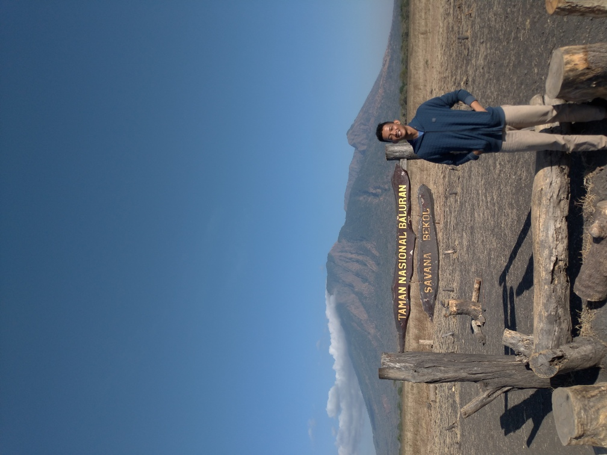
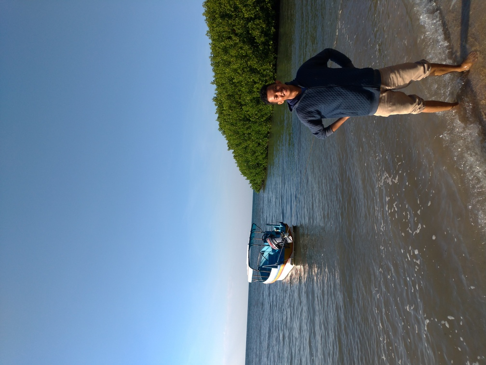
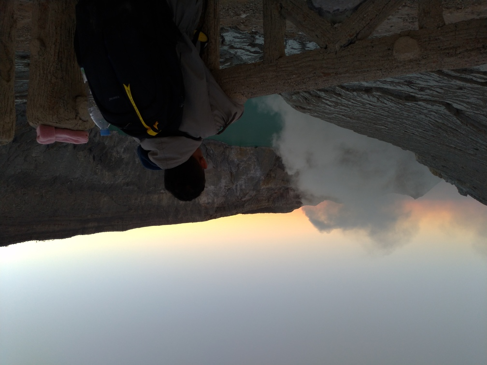

Banyuwangi Recommended Tourism
Taman Nasional Baluran Savana Bekol
The first place that I recommended when you visit baluran is Savana Bekol this place is really amazing, you can sightseeing in there and if you are lucky, you can meet deers and monkey. From Savana Bekol you also can view the mesmerizing of Mount Baluran. You should visit in the morning for the best view.
Pantai Bama
The second is Pantai Bama, This places is near from Savana Bekol (only 2.8 km from savana bekol). In here you can enjoy the beauty of seashore and mangrove of Bama Beach. there also swings that you can take a pic with (it's free). It's a perfect match, after you visit Savana Bekol than relax in here ^^.
Kawah Ijen
This is the must visit place in Banyuwangi. Kawah Ijen is crater that sparkling blue fire in the night. Kawah Ijen is special because in the world there are only crater that sparkling blue fire The first is Iceland and the second is Kawah Ijen. But unfortunately you can only see the blue fire in the night right before the dawn and it's a little bit tiring because you need atleast 2 hour walk from the first checkpoint. But believe me, it is worth it.